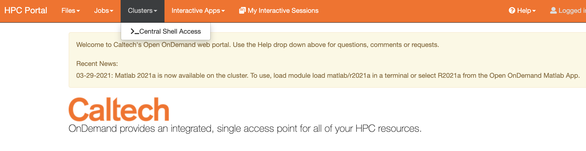
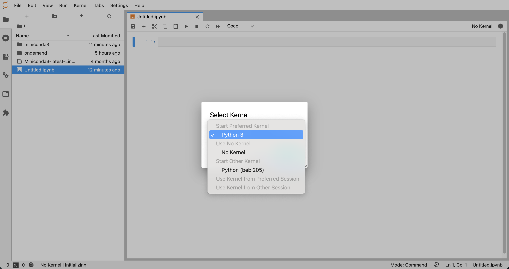

Caltech Cluster Access¶
Prerequisites¶
VPN Access¶
Please follow Caltech’s instructions for VPN access if you do not already have it set up. The initial set up can take a few days so please start this process as soon as possible.
DUO Multi-factor Authentication¶
The Caltech HPC Cluster requires multi-factor authentication. You can set this up through the Access website.
Accessing the cluster¶
The first time that you access the cluster you need to log in via SSH. Afterwards you can instead log in through the browser.
SSH Access¶
From the command line, run
ssh your-username@login.hpc.caltech.edu
Follow the prompts to enter your access.caltech.edu password
Follow the prompt to complete multi-factor authentication using Duo
Browser Access¶
Open https://ondemand.hpc.caltech.edu/ and login with your Caltech username and password
Setting up your environment¶
We recommend using Conda as a package managed for python scientific computing packages. From the HPC Portal, select Clusters > Central Shell Access. 
Install Miniconda¶
From the shell, run the following
wget https://repo.anaconda.com/miniconda/Miniconda3-latest-Linux-x86_64.sh
sh ./Miniconda3-latest-Linux-x86_64.sh
Follow the prompts to accept the license agreement and select the install location. Select yes to add conda to your path.
You will need to exit the shell and then reopen it to verify that conda is active. The command
which pythonshould return~/miniconda3/bin/python.We are now going to create a conda environment with the basic set of packages that we are using in the class. From the shell, run the following
Configure a conda environment¶
Create a new environment named
bebi205with a basic set of packagesconda create -n bebi205 biopython==1.78 tensorflow==2.4.1 scikit-image scikit-learn pandas imageio ipykernel
Activate the environment
conda activate bebi205
Install
tensorflow-addonsusing pippip install tensorflow-addons
Register a python kernel for this environment
python -m ipykernel install --user --name bebi205 --display-name "Python (bebi205)"
Launching a notebook¶
You are now set up to launch a notebook for interactive computing. From the HPC Portal, select Interactive Apps > Jupyter Lab (or Notebook). This will bring up a form to configure the compute resources that will be used for the session. As a general guide, the more hours and/or hardware that you request the longer your session will take to start.
The settings below are a recommended starting point for compute resources for image processing jobs. You may need to experiment a bit to find out what works best for your task. Please be mindful of shutting down instances when you don’t need them and minimizing the compute power that you request. This will help us continue to receive department funding for cluster access in the future.
Number of hours : Generally should be under 48 hours
Number of cores : 2 cores
Memory per core : 32-64 GBs of memory total
Number of GPUs : If you are training a model, you should request 1 GPU.
Your job may take a few minutes to a few hours to launch depending on how much compute power you requested. After the resources are available, you should see a button to open your Jupyter session. After opening jupyter, make sure to select the bebi205 kernel for your notebook.
